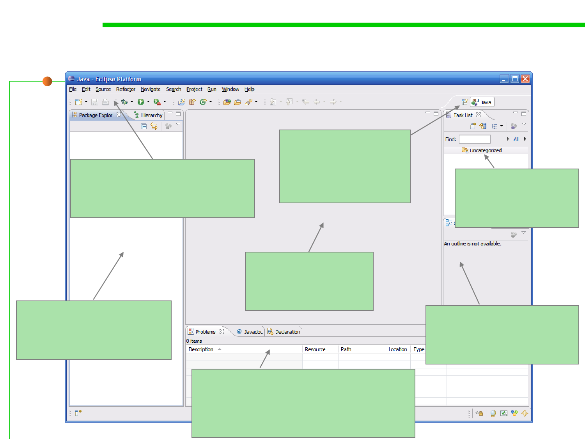

2.2 Process, Systems, and Tools of Software Construction
Eclipse IDE Components
Menu bars
Full drop down menus plus quick
access to common functions
Perspective Switcher
We can switch between
various perspectives
here
Task List Pane
This contains a list of
“tasks” to complete
Package Explorer Pane
This is where our
projects/files are listed
Editor Pane
This is where we edit
our source code
Miscellaneous Pane
Various components can appear in this
pane – typically this contains a console
and a list of compiler problems
Outline Pane
This contains a hierarchical
view of a source file